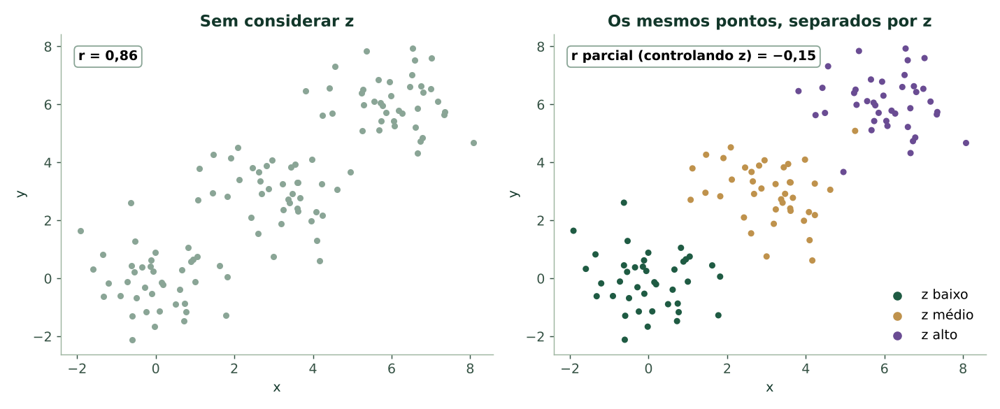
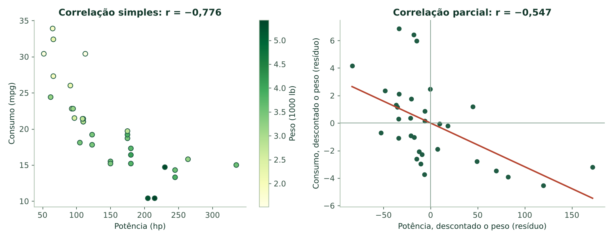

Correlação parcial
Mede a associação linear entre duas variáveis depois de descontado o efeito de uma ou mais variáveis de controle.
Comece por aqui
O número de sorvetes vendidos e o número de afogamentos sobem e descem juntos ao longo do ano. Sorvete causa afogamento? Não: os dois dependem da temperatura. A correlação parcial mede a associação entre duas variáveis depois de descontar, de ambas, a parte que é explicada por uma terceira (ou por várias). É o primeiro passo para separar associação direta de associação induzida por uma variável de confusão.
O que é o coeficiente
A correlação parcial entre \(x\) e \(y\) controlando \(z\), escrita \(r_{xy\cdot z}\), é a correlação de Pearson entre duas séries de resíduos: o que sobra de \(x\) depois de ajustada uma reta em função de \(z\), e o que sobra de \(y\) depois do mesmo ajuste. Em outras palavras: entre unidades com o mesmo valor de \(z\), \(x\) e \(y\) ainda caminham juntas?

- A parcial fica próxima de zero: a associação era explicada por z.
- A parcial diminui, mas permanece: z explica parte da associação.
- A parcial aumenta ou muda de sinal: z mascarava a relação (efeito de supressão).
Pressupostos e como verificá-los
| Pressuposto | Por que importa | Como verificar |
|---|---|---|
| Variáveis quantitativas | O coeficiente é um Pearson entre resíduos. | Tipo das variáveis. |
| Relações lineares de x e de y com z | Os resíduos vêm de retas; curvatura deixa efeito de z sem remover. | Gráficos de dispersão de x e de y contra z. |
| Relação linear entre os resíduos | Mesma exigência do Pearson. | Gráfico dos resíduos de y contra os de x. |
| Unidades independentes | Condição do teste. | Delineamento do estudo. |
| Normalidade dos resíduos | Validade do teste t e do IC em amostras pequenas. | Q–Q dos resíduos; Shapiro–Wilk. |
| Ausência de valores extremos influentes | Poucos pontos podem dominar o resultado. | Gráfico dos resíduos. |
| Variável de controle bem escolhida | Controlar uma consequência de x e de y (colisor) cria associação espúria. | Raciocínio causal sobre o problema. |
Hipóteses e estatística de teste
Em que:
- \(r_{xy\cdot z}\)
- correlação parcial amostral entre x e y, controlando z
- \(r_{xy},\ r_{xz},\ r_{yz}\)
- correlações de Pearson simples entre os pares de variáveis
- \(n\)
- número de unidades
- \(k\)
- número de variáveis controladas (na fórmula acima, \(k=1\))
- \(t\)
- estatística de teste, com \(n-2-k\) graus de liberdade
Exemplo numérico, passo a passo (mtcars)
Com \(x\) = potência, \(y\) = consumo e \(z\) = peso: \(r_{xy}=-0{,}776\), \(r_{xz}=0{,}659\) e \(r_{yz}=-0{,}868\).
Numerador: \(-0{,}776-(0{,}659)(-0{,}868)=-0{,}776+0{,}572=-0{,}205\).
Denominador: \(\sqrt{(1-0{,}434)(1-0{,}753)}=\sqrt{0{,}566\times0{,}247}=0{,}374\).
\(r_{xy\cdot z}=-0{,}205/0{,}374=-0{,}547\).
\(t=-0{,}547\sqrt{29/(1-0{,}299)}=-3{,}519\), com 29 g.l. ⇒ \(p=0{,}0015\).
Intervalo de confiança
No exemplo: \(z=-0{,}614\), \(EP=1/\sqrt{28}=0{,}189\) e \(IC_{95\%}=[-0{,}755;\ -0{,}239]\).
Propriedades
- \(-1\leq r_{xy\cdot z}\leq1\).
- É igual à correlação de Pearson entre os resíduos das regressões de x em z e de y em z.
- O teste t é idêntico ao do coeficiente de x na regressão múltipla de y em x e z.
- O quadrado, \(r_{xy\cdot z}^2\), é a fração da variabilidade de y ainda não explicada por z que x explica.
- Com várias variáveis de controle, todas as parciais podem ser obtidas de uma vez pela inversa da matriz de correlações.
- A correlação semiparcial remove z apenas de x; seu quadrado é o acréscimo de R² ao incluir x no modelo.
Como interpretar os resultados
| Comparação | Leitura |
|---|---|
| Parcial ≈ simples | z tem pouca relação com a associação entre x e y. |
| Parcial bem menor que a simples (em valor absoluto) | Parte da associação passava por z. |
| Parcial ≈ 0 | A associação entre x e y pode ser atribuída a z. |
| Parcial maior ou de sinal contrário | z estava mascarando a relação (supressão). |
| p < 0,05 | Evidência de associação linear entre x e y para z fixo. |
A correlação parcial desconta apenas as variáveis incluídas, e apenas a parte linear de seu efeito. Variáveis de confusão não medidas continuam atuando.
Reporte a correlação simples e a parcial lado a lado, o intervalo de confiança da parcial e as variáveis controladas.
Como executar no R e em Python
Onde executar o código em Python
Não é preciso instalar nada: o Google Colab é um computador na nuvem, gratuito, que executa Python pelo navegador e já traz as bibliotecas usadas aqui (numpy, scipy e matplotlib).
No R base, a correlação parcial sai da fórmula ou da correlação entre resíduos de lm(), ambas do pacote stats. O pacote ppcor oferece pcor.test(x, y, z), que devolve estimativa, estatística e valor-p, e aceita os métodos de Spearman e Kendall.
e_x <- residuals(lm(hp ~ wt, data = mtcars))
e_y <- residuals(lm(mpg ~ wt, data = mtcars))
cor(e_x, e_y)
Exemplo de aplicação
Contexto dos dados
Na ficha de Pearson vimos que carros mais potentes consomem mais (r = −0,776 entre hp e mpg). Mas carros potentes são também mais pesados, e o peso, por si só, aumenta o consumo. Quanto da associação entre potência e consumo permanece quando comparamos carros de mesmo peso?
Código em R
# Correlação parcial: exemplo completo ----
# Pacote: apenas o stats (já vem com o R). Dados: mtcars.
# 1. Dados: consumo (mpg), potência (hp) e peso (wt)
x <- mtcars$hp; y <- mtcars$mpg; z <- mtcars$wt
n <- length(x)
# 2. Correlações simples (de ordem zero)
cor(cbind(mpg = y, hp = x, wt = z))
# 3. Correlação parcial entre hp e mpg, controlando wt (fórmula)
r_xy <- cor(x, y); r_xz <- cor(x, z); r_yz <- cor(y, z)
r_p <- (r_xy - r_xz * r_yz) / sqrt((1 - r_xz^2) * (1 - r_yz^2))
k <- 1 # número de variáveis controladas
gl <- n - 2 - k
t <- r_p * sqrt(gl / (1 - r_p^2))
c(r_parcial = r_p, t = t, gl = gl, valor_p = 2 * pt(abs(t), gl, lower.tail = FALSE))
# 4. O mesmo resultado pela correlação entre resíduos
e_x <- residuals(lm(x ~ z))
e_y <- residuals(lm(y ~ z))
cor(e_x, e_y)
# 5. Intervalo de confiança de 95% (z de Fisher com n - 3 - k)
zf <- atanh(r_p); ep <- 1 / sqrt(n - 3 - k)
tanh(zf + c(-1, 1) * qnorm(0.975) * ep)
# 6. Matriz de correlações parciais (cada par controlando as demais variáveis)
P <- solve(cor(cbind(mpg = y, hp = x, wt = z)))
parciais <- -cov2cor(P); diag(parciais) <- 1
round(parciais, 4)
# 7. Função pronta no pacote ppcor: install.packages("ppcor")
# ppcor::pcor.test(x, y, z)
# 8. Gráficos
par(mfrow = c(1, 2))
plot(x, y, pch = 19, xlab = "Potência (hp)", ylab = "Consumo (mpg)")
plot(e_x, e_y, pch = 19, col = "darkgreen", xlab = "Resíduo de hp | wt", ylab = "Resíduo de mpg | wt")
abline(lm(e_y ~ e_x), col = "red", lwd = 2)
par(mfrow = c(1, 1))
A mesma análise em Python, com os resultados
Cole o código em um notebook do Google Colab ↗ e execute com Shift+Enter. Os valores abaixo são a saída desse código.
# Bibliotecas: numpy, scipy e matplotlib (já instaladas no Google Colab)
import numpy as np
from scipy import stats
import matplotlib.pyplot as plt
# Dados do conjunto mtcars: consumo (mpg), potência (hp) e peso (wt)
mpg = np.array([21, 21, 22.8, 21.4, 18.7, 18.1, 14.3, 24.4, 22.8, 19.2, 17.8, 16.4, 17.3, 15.2, 10.4, 10.4, 14.7, 32.4, 30.4, 33.9, 21.5, 15.5, 15.2, 13.3, 19.2, 27.3, 26, 30.4, 15.8, 19.7, 15, 21.4])
hp = np.array([110, 110, 93, 110, 175, 105, 245, 62, 95, 123, 123, 180, 180, 180, 205, 215, 230, 66, 52, 65, 97, 150, 150, 245, 175, 66, 91, 113, 264, 175, 335, 109])
wt = np.array([2.62, 2.875, 2.32, 3.215, 3.44, 3.46, 3.57, 3.19, 3.15, 3.44, 3.44, 4.07, 3.73, 3.78, 5.25, 5.424, 5.345, 2.2, 1.615, 1.835, 2.465, 3.52, 3.435, 3.84, 3.845, 1.935, 2.14, 1.513, 3.17, 2.77, 3.57, 2.78])
n = len(mpg)
# 1. Correlações simples (de ordem zero)
r_xy = stats.pearsonr(hp, mpg).statistic
r_xz = stats.pearsonr(hp, wt).statistic
r_yz = stats.pearsonr(mpg, wt).statistic
print(f"r(hp, mpg) = {r_xy:.4f} | r(hp, wt) = {r_xz:.4f} | r(mpg, wt) = {r_yz:.4f}")
# 2. Correlação parcial entre hp e mpg, controlando wt (fórmula)
r_p = (r_xy - r_xz * r_yz) / np.sqrt((1 - r_xz**2) * (1 - r_yz**2))
k = 1 # número de variáveis controladas
gl = n - 2 - k
t = r_p * np.sqrt(gl / (1 - r_p**2))
p = 2 * stats.t.sf(abs(t), gl)
print(f"Correlação parcial r(hp, mpg | wt) = {r_p:.4f} | t = {t:.4f}, gl = {gl}, p-valor = {p:.5f}")
# 3. O mesmo resultado pela correlação entre resíduos
def residuos(v, z):
b, a = np.polyfit(z, v, 1)
return v - (a + b * z)
e_hp, e_mpg = residuos(hp, wt), residuos(mpg, wt)
print(f"Correlação entre os resíduos = {stats.pearsonr(e_hp, e_mpg).statistic:.4f}")
# 4. Intervalo de confiança de 95% (z de Fisher com n - 3 - k)
z = np.arctanh(r_p); ep = 1 / np.sqrt(n - 3 - k); zc = stats.norm.ppf(0.975)
ic = np.tanh([z - zc * ep, z + zc * ep])
print(f"IC 95% = [{ic[0]:.4f}; {ic[1]:.4f}] | r parcial ao quadrado = {r_p**2:.4f}")
# 5. Correlação semiparcial (wt removido apenas de hp)
r_sp = (r_xy - r_xz * r_yz) / np.sqrt(1 - r_xz**2)
print(f"Correlação semiparcial = {r_sp:.4f} | ao quadrado = {r_sp**2:.4f}")
# 6. Matriz de correlações parciais pela inversa da matriz de correlações
R = np.corrcoef([mpg, hp, wt]); P = np.linalg.inv(R)
parc = -P / np.sqrt(np.outer(np.diag(P), np.diag(P))); np.fill_diagonal(parc, 1)
print("Matriz de correlações parciais (mpg, hp, wt):\n", np.round(parc, 4))
# 7. Gráficos: dispersão original e dispersão dos resíduos
fig, ax = plt.subplots(1, 2, figsize=(10, 4))
ax[0].scatter(hp, mpg); ax[0].set_xlabel("Potência (hp)"); ax[0].set_ylabel("Consumo (mpg)")
ax[1].scatter(e_hp, e_mpg, color="darkgreen"); ax[1].set_xlabel("Resíduo de hp | wt"); ax[1].set_ylabel("Resíduo de mpg | wt")
plt.show()
Resultados da execução
r(hp, mpg) = -0.7762 | r(hp, wt) = 0.6587 | r(mpg, wt) = -0.8677 Correlação parcial r(hp, mpg | wt) = -0.5470 | t = -3.5187, gl = 29, p-valor = 0.00145 Correlação entre os resíduos = -0.5470 IC 95% = [-0.7550; -0.2390] | r parcial ao quadrado = 0.2992 Correlação semiparcial = -0.2719 | ao quadrado = 0.0740 Matriz de correlações parciais (mpg, hp, wt): [[ 1. -0.547 -0.7512] [-0.547 1. -0.0469] [-0.7512 -0.0469 1. ]]

| Elemento | Valor | Leitura |
|---|---|---|
| r(hp, mpg) | −0,776 | Correlação simples. |
| r(hp, wt) e r(mpg, wt) | 0,659 e −0,868 | O peso está associado às duas variáveis. |
| r(hp, mpg | wt) | −0,547 | Correlação parcial: menor, mas ainda relevante. |
| t (29 g.l.) | −3,519 | Valor-p = 0,0015. |
| IC 95% | [−0,755; −0,239] | Intervalo amplo, mas distante de zero. |
| r parcial² | 0,299 | A potência explica 30% da variabilidade do consumo que o peso não explicava. |
| r semiparcial² | 0,074 | Acréscimo de R² ao incluir hp em um modelo que já tem wt. |
| r(hp, wt | mpg) | −0,047 | Fixado o consumo, potência e peso praticamente não se associam. |
Leitura: o peso explica uma parte da associação entre potência e consumo, mas não toda: entre carros de mesmo peso, os mais potentes continuam percorrendo menos milhas por galão. Repare que o valor de t (−3,519) e o valor-p (0,0015) são exatamente os do coeficiente de hp na regressão linear múltipla de mpg em wt e hp: as duas análises respondem à mesma pergunta.
Erros comuns
| Erro | Como evitar |
|---|---|
| Concluir causalidade porque “controlou” uma variável | Outras variáveis de confusão podem existir. |
| Controlar uma variável que é consequência de x e de y | Isso cria associação espúria (viés de colisor); pense na estrutura causal. |
| Controlar um mediador e concluir que não há efeito | Se z está no caminho entre x e y, a parcial mede só o efeito direto. |
| Ignorar não linearidade com z | Resíduos de retas não removem efeitos curvos; examine os gráficos. |
| Controlar muitas variáveis com n pequeno | Os graus de liberdade (n − 2 − k) se esgotam e o resultado fica instável. |
| Confundir parcial com semiparcial | A parcial remove z de x e de y; a semiparcial, apenas de uma delas. |
Alternativas e fluxo de trabalho
| Procedimento | Quando preferir |
|---|---|
| Regressão linear múltipla | Interessa o efeito em unidades de y, previsões ou vários preditores. |
| Correlação semiparcial | Quantificar a contribuição única de x para o R². |
| Correlação parcial de Spearman ou Kendall | Relações monotônicas não lineares ou valores extremos (ppcor). |
| ANCOVA | A variável de interesse é categórica e a de controle, quantitativa. |
| Pearson | Não há variável de confusão a considerar. |
- Defina, pelo conhecimento do problema, quais variáveis devem ser controladas.
- Examine as dispersões de x e de y contra z.
- Calcule a correlação simples e a parcial.
- Compare as duas e reporte o intervalo de confiança.
Referências desta ficha
- YULE, George Udny. On the theory of correlation for any number of variables, treated by a new system of notation. Proceedings of the Royal Society of London. Series A, v. 79, n. 529, p. 182-193, 1907.
- FISHER, Ronald A. The distribution of the partial correlation coefficient. Metron, v. 3, p. 329-332, 1924.
- COHEN, Jacob; COHEN, Patricia; WEST, Stephen G.; AIKEN, Leona S. Applied multiple regression/correlation analysis for the behavioral sciences. 3. ed. Mahwah: Lawrence Erlbaum, 2003.
- KIM, Seongho. ppcor: an R package for a fast calculation to semi-partial correlation coefficients. Communications for Statistical Applications and Methods, v. 22, n. 6, p. 665-674, 2015.
- HENDERSON, Harold V.; VELLEMAN, Paul F. Building multiple regression models interactively. Biometrics, v. 37, n. 2, p. 391-411, 1981. (Conjunto de dados
mtcars, pacotedatasetsdo R.) - R CORE TEAM. R: a language and environment for statistical computing. Vienna: R Foundation for Statistical Computing, 2026. Disponível em: https://www.r-project.org/. (Funções
cor,lmeresiduals, pacotestats.) - POSIT TEAM. RStudio: integrated development environment for R. Boston: Posit Software, PBC. Disponível em: https://posit.co/download/rstudio-desktop/.
- VIRTANEN, Pauli et al. SciPy 1.0: fundamental algorithms for scientific computing in Python. Nature Methods, v. 17, p. 261-272, 2020. DOI: 10.1038/s41592-019-0686-2. (Funções do módulo
scipy.stats.) - HARRIS, Charles R. et al. Array programming with NumPy. Nature, v. 585, p. 357-362, 2020. DOI: 10.1038/s41586-020-2649-2.
- HUNTER, John D. Matplotlib: a 2D graphics environment. Computing in Science & Engineering, v. 9, n. 3, p. 90-95, 2007.
- GOOGLE. Google Colaboratory. Disponível em: https://colab.research.google.com/.
- As figuras desta ficha foram elaboradas pelo autor.

Prof. Dr. Cássius Henrique Xavier Oliveira
Professor · ICTIN/UFLA · Estatística, Confiabilidade e Ciência de Dados.
Conheça minha trajetória e projetos →